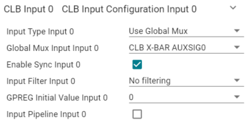

eCAP Implementation Using CLB#
The objective of this lab is to gain more advanced skill with the Configurable Logic Block (CLB) peripheral and its submodules through a guided example. The scenario in this lab consists of implementing an eCAP module, or a capture module, using parts of the CLB. This demonstration showcases the CLB’s ability to connect to a signal, accurately time events, and send data to the CPU. The CLB will measure a high signal, a low signal, and another high signal before sending the data to the CPU. An external wave generator or the ePWM module can be set up to supply a signal, if a wave generator is not available.
Solution#
All solutions are available in the directory:
<c2000ware_install_path>/training/device/<device_name>.
Introduction#
This lab demonstrates how a CLB tile can be used to implement the same basic functionality as an eCAP peripheral. The CLB will use edge filtering to create events where counters can start and stop, and data can be pushed to the CPU. The purpose of this is to simulate an eCAP with its basic features.
An eCAP operates by measuring the time between two signal transitions using a counter. This peripheral can measure the time between two high pulses, two low pulses, a low and a high pulse, and a high and a low pulse. The CLB, because it has a counter and methods of triggering events, can therefore be used in much the same way.

Lab Setup#
Hardware Setup#
You will need the following hardware for this lab:
A C2000 controlCARD or LaunchPad with the supplied USB cable.
1 Jumper cable (optional).
Waveform generator. (optionally available to use ePWM instead of waveform generator)
Use the supplied USB cable to connect the USB Micro or USB Mini Type-B connector to the board. Connect the USB Standard Type-A connector into your computer USB port. You should see some LEDs light up on your board. In addition to powering the board, a JTAG communication link is also established between the device and Code Composer Studio. Later in the lab, the sensor GPIO pin will be routed to either GND or 3.3V, so ensure you have a jumper cable. An oscilloscope is optional, but will allow the ePWM output to be viewed through GPIO0.
Software Setup#
The following software will need to be installed on your computer:
Create a new CCS project#
Alternative Method for CLB Peripheral
Within C2000Ware, the CLB example folder contains its own example project which
can be imported into CCS. This CLB example project automatically includes
additional library files which are necessary for the CLB’s operation. It also
initializes and enables CLB1 by default. This project is titled clb_empty and
can be found at C:/ti/c2000/C2000Ware_X_XX_00_00/driverlib/<devicename>/examples/clb/CCS.
To use this method, follow the steps below, substituting the clb_empty
project in place of the empty_sysconfig_xxx project.
Our first task is to create an empty driverlib project in our Code Composer Studio (CCS) workspace. The basic instructions are as follows:
Open CCS and go to Project→Import CCS Projects. A new window should appear. Ensure that the Select search-directory option is activated.
Click the Browse button and select the
C:/ti/c2000/C2000Ware_X_XX_00_00/driverlib/<devicename>/examples/pinmux/CCSdirectory. Note that we assume the default Windows C2000Ware install path. If you have a dual core device, select theC:/ti/c2000/C2000Ware_X_XX_00_00/driverlib/<devicename>/examples/cpu1/pinmux/CCSdirectory instead.Under Discovered Projects, you should now see the
empty_sysconfig_xxxproject with different device pin options. Select the project with the correct pin count from the list of “Discovered Projects”. For the various LaunchPads and ControlCARDs the recommended projects are outlined below based on the device.
Device |
Project |
|---|---|
F28379D |
empty_sysconfig_337zwt |
F2838x |
empty_sysconfig_337bga |
F28004x |
empty_sysconfig_100pz |
F28002x |
empty_sysconfig_80qfp |
F28003x |
empty_sysconfig_100pz |
Click Finish to import and copy the
empty_sysconfig_xxxproject into your workspace.Rename the project to your liking
Right-click on the project in Project Explorer pane. Select ‘Rename’ from dropdown menu and rename the project to ‘module13_clb_ecap_sysconfig’ or a name of your choosing.
Now click the ‘Down Arrow’ located to the left of the imported project to expand it and select empty_sysconfig_xxxx.c. Right-click on the file, and select ‘Rename’ to rename the file to a name of your choosing.
Task 1 - Configure LED Output#
Select the GPIO number from the “Hardware” tab in SysConfig.
Click ‘+’ in GPIO to add GPIO line configuration for LED4 (myBoardLED0_GPIO). The parameters should be filled like below.
Task 2 - Setting up the GPIO (Optional)#
We will begin this lab exercise by configuring the required GPIO within the
c2000.syscfg file of the project. Double-click the c2000.syscfg file within
the project to open the SysConfig GUI. Only one GPIO will be needed for
this lab, and it will serve as the external signal source.
Within SysConfig, perform the following steps:
Add a GPIO by clicking the (+) icon next to ‘GPIO’ on the left pane
Set the GPIO as an input
Set the Pin Type as “Push-pull output/floating input”
Now, we have to choose which GPIO we are configuring. Upon expanding the “PinMux” view we can choose the desired GPIO. Follow the steps below:
Click on the three dot icon at the top right of the SysConfig window
Select “Preferences & Actions”
Under preferences, click on the ‘Device Pin Label’ drop down arrow and enable “Device pin name”. This is not part of the default SysConfig settings but allows us to see the pin name along with the pin number
Within the GPIO PinMux, select the desired GPIO (see table below)
Device |
LaunchPad |
controlCARD |
|---|---|---|
F28379D |
58 |
40 |
F2838x |
n/a |
40 |
F28004x |
58 |
34 |
F28002x |
42 |
39 |
F28003x |
48 |
40 |
To be able to use the GPIO as a CLB input, we need to route the GPIO as an
auxiliary signal (AUXSIG) through the global input bus. This requires using the
input crossbar (INPUTXBAR) and CLB crossbar (CLBXBAR). First, configure the
Input X-BAR to connect the GPIO to INPUTXBAR1 using the steps below:
Add Input X-BAR by clicking the (+) icon next to ‘INPUTXBAR’ on the left pane
Select INPUTXBAR1 as the Input X-BAR instance to be used
Configure INPUTXBAR1 to use the specified GPIO
If desired, check the box to lock INPUTXBAR1
Next, the CLB X-BAR needs to be configured to route INPUTXBAR1 as an auxiliary
signal into the CLB. Configure the CLB X-BAR to route INPUTXBAR1 to AUXSIG0
using the steps below:
Add a CLB X-BAR instance by clicking the (+) icon next to ‘CLBXBAR’ on the left pane
Select AUXSIG0 as the Aux Signal Input
Select MUX 01 as the MUX to be used for this AUXSIG0. MUX 01 is a requirement as it provides a connection to the INPUTXBAR1 signal
In the MUX 1 dropdown, configure INPUTXBAR1 to be used
Now, the GPIO has been successfully configured as AUXSIG0 on the global input bus and can be used as an input into the CLB.
Task 3 - Initialize the EPWM Module#
The EPWM module will be used to represent an external signal, and is configured to be a 2kHz PWM waveform with a 50% duty cycle on ePWM1A (NOTE: here the system clock is set to 100 MHz, see ePWM section for calculating frequency from time base period). For more information on the PWM, please review the Control Peripherals module.
We will start by adding a PWM instance within Sysconfig by clicking on the (+) sign next to ‘EPWM’ within the left pane of Sysconfig. Name this EPWM instance ‘myEPWM1’. Now that we have added an EPWM instance, we will configure the EPWM1 ‘Timebase’ submodule as follows:
Set High Speed Clock Divider to ‘Divide clock by 1’
Set Time Base Period to ‘25000’
Set Counter Mode to ‘Up - down - count mode’

The ‘Counter Compare’ submodule for EPWM1A will be as follows:
Set Counter Compare A (CMPA) to ‘12500’

Now, configure the ‘Action Qualifier’ submodule for EPWM1A as follows:
Enable Shadow Mode
Set Shadow Load Event to ‘Load when counter equals zero’
In Events to Configure for ePWMxA output, select ‘Time base counter up equals COMPA’ and ‘Time base counter down equals COMPA’
Set Time base counter up equals COMPA to ‘Set output pins to High’
Set Time base counter down equals COMPA to ‘Set output pins to Low’
Lastly, we need to configure the PinMux for EPWM1A. Even though the output of ePWM1A will be overridden by the output of the CLB, configuring the output GPIO is good practice as it allows us to view the pure ePWM1A pulse for debugging purposes. Follow the steps below:
Select ‘CUSTOM’ on the EPWM1 PinMux. This allows us to select only EPWM_A as an output
Configure the Pin as ‘EPWM_A’
Set the EPWM Peripheral to be used as ‘EPWM1’
Configure the ‘EPWM_A’ pin to be ‘GPIO0’

Task 4 - Setup the CLB#
To setup the CLB peripheral, we need to add a CLB instance within SysConfig. We will need to setup this CLB instance to use the external signal as an input. We must also attach an interrupt handler to this CLB instance so that the HLC can issue interrupts to the CPU to send data. Setup CLB1 by following the steps below:
Add a CLB by clicking the (+) icon next to ‘CLB’ on the left pane
Set the CLB Instance to be ‘CLB1’
Select ‘Input 0’, ‘Input 1’, and ‘Input 2’ as Inputs Used for CLB1
Now we will route the GPIO input into Input 0 of CLB1. Doing this allows us to select AUXSIG0 as an input into CLB1. Configure Input 0 as follows:
Set the Input type as ‘Use Global Mux’
Under the dropdown for Global Mux Input, select ‘CLB X-BAR AUXSIG0’
No syncing, input syncing, or initial GPREG writes are necessary

Next, we will route the GPIO input into Input 1 of CLB1. Configure Input 1 as follows:
Set the Input type as ‘Use Global Mux’
Under the dropdown for Global Mux Input, select ‘CLB X-BAR AUXSIG0’
Set the Input Filter to be Rising edge detect and enable synchronization
Finally, we will route the GPIO input into Input 2 of CLB1. Configure Input 2 as follows:
Set the Input type as ‘Use Global Mux’
Under the dropdown for Global Mux Input, select ‘CLB X-BAR AUXSIG0’
Set the Input Filter to be Falling edge detect and enable synchronization
Because the HLC submodule within CLB1 will be issuing interrupts to the CPU when a fault is detected, an Interrupt Handler must be configured. Follow the steps below to do this:
Check the box next to ‘Register Interrupt Handler’
Rename the Interrupt Handler function as desired
Check the box next to ‘Enable Interrupt in PIE’
Verify that the Initialize TILE checkbox is selected
Task 5 - Configure the CLB Tile#
Now it is time to configure the CLB1 tile to perform the logic necessary to implement an eCAP and send data to the CPU.
Navigate to the ‘TILE’ peripheral within the SysConfig GUI and add a single TILE instance. Alternatively, you can add a tile by selecting the “Attach a TILE Config to this CLB” checkbox. Begin the CLB tile configuration by editing LUT_0. LUT_0 will be responsible for creating an enable for the counter when the signal is low. Configure LUT_0 as follows:
Select ‘BOUNDARY.in0’ as the input for i0. This corresponds to the external signal
In the equation field, enter the following logical expression:
!i0With this logic, the output of LUT_0 will be the inverse of the external signal.
LUT_1 will be responsible for detecting the first high signal of a square wave. The output of this LUT will be used as an event trigger by the HLC so that the counter can store the time of the first high pulse. Configure LUT_1 as follows:
Select ‘FSM_0.S0’ as the input for i0. This corresponds to the state where the first high pulse occurs in the square wave.
Select ‘BOUNDARY.in2’ as the input for i1. This corresponds to the event where a falling edge occurs, or in other words the end of the high pulse.
In the equation field, enter the following logical expression:
i0&i1The result of this logic is that an event will be triggered in the HLC when the FSM detects the ‘first’ high pulse of a wave and the pulse has just fallen low
LUT_2 will be responsible for detecting the second high signal of a square wave. The output of this LUT will be used as an event trigger by the HLC so that the counter can store the time of the first high pulse. Configure LUT_2 as follows:
Select ‘FSM_0.S1’ as the input for i0. This corresponds to the state where the second high pulse occurs in the square wave.
Select ‘BOUNDARY.in2’ as the input for i1. This corresponds to the event where a falling edge occurs, or in other words the end of the high pulse.
In the equation field, enter the following logical expression:
i0&i1The result of this logic is that an event will be triggered in the HLC when the FSM detects the ‘second’ high pulse of a wave and the pulse has just fallen low
Now we must configure FSM_0 to transition between states that divide a signal so that there is a first and second high signal that can be distinguished:
Set ‘BOUNDARY.in1’ as the input, which is the rising edge detect input.
Set the equation for S0 as s0^e0 (^ = XOR). This logic dictates that S0 will be true when the first high pulse is occurring (S0 indicates the first high pulse), the rising edge has occurred, but not both/neither.
Set the equation for S1 as !(s0^e0). This logic states that S1 will be true when either a rising edge and the first high pulse is occurring simultaneously, or neither are occurring. S1 indicates the second high pulse.
In the output equation field, enter the following logical expression:
s0
Next are the counters. Two counters will be used for this lab, one to count the length of time the signal is high, the other to count when it is low. COUNTER_0 will count up when the signal is high, and reset when a rising edge occurs. Because it is measuring between rising edges and only counting when the signal is high, it will only measure the length of the high pulse:
COUNTER_1 will measure the length of time the signal is low. This counter counts when the inverse of the signal (from LUT_0) is high and resets on a falling edge. This measures between falling edges and only counts the time when the inverse of the signal is high, thereby only measuring the times the actual signal is low:
Finally, the High-Level Controller is configured with three events.
Event 0 is triggered by the first high pulse of the sensor input and will load the value from COUNTER_0 into the R0 register.
Event 1 is triggered by the low pulse of the sensor input and will load the value from COUNTER_1 into the R1 register.
Event 2 is triggered by the second high pulse of the sensor input and will load the value from COUNTER_0 into the R2 register. Then the registers are pushed and an interrupt is triggered so the CPU may read the data. The interrupt is triggered here so that the first high pulse, low pulse, and second high pulse are sent to the CPU without missing or overwriting data.
Configure the HLC as follows:
Select ‘LUT_1.OUT’ as the trigger condition for Event 0
Select ‘BOUNDARY.in1’ as the trigger condition for Event 1
Select ‘LUT_2.OUT’ as the trigger condition for Event 2
In the fields for the HLC programs, enter the instructions as shown in the images below
Task 6 - Setup the CLB ISR#
Now that we have configured the CLB module within SysConfig, we can switch to the application code portion of this lab. Within the project click on the .c file under the name you chose. Within the .c file, we need to write the ISR (interrupt service routine).
The first thing that will be done in the interrupt is reading the pushed registers via the read FIFO function.
Note: The name of the ISR function is what we defined earlier within the SysConfig configuration for the CLB.
__interrupt void INT_myCLB0_ISR(void)
{
CLB_readFIFOs(myCLB0_BASE, (uint32_t *)regPush);
A GPIO pin will be toggled upon reaching a certain counter value of a global variable. This is to show that the ISR is triggering properly. Lastly, we must acknowledge the PIE group as well as clear the interrupt status flag so that we can continue to service interrupts in the future.
//
// Toggle the GPIO pins; increase from 1000 to slow down the toggle
//
ledCount = (ledCount + 1) % (1000);
if(ledCount == 0)
{
if(gpioStatus)
{
gpioStatus = 0;
}
else
{
gpioStatus = 1;
}
GPIO_writePin(myBoardLED0_GPIO, gpioStatus);
}
CLB_clearInterruptTag(myCLB0_BASE);
Interrupt_clearACKGroup(INT_myCLB0_INTERRUPT_ACK_GROUP);
}
Task 7 - Setup the .c file#
The last thing we have to do is define any variables we are using throughout the project and setup the content within the main() function, which includes device initialization.
We begin by including the basic necessary libraries driverlib.h and device. h. Next, include the SysConfig-generated header file board.h. This should
already be included by default. Lastly, include the clb_config.h and clb.h
libraries, which are required for proper CLB function. These two CLB libraries
are included by default if the clb_empty project was imported.
//
// Included Files
//
#include "driverlib.h"
#include "device.h"
#include "board.h"
Then we define the global variables that will be used.
//
// Global variables and definitions
//
volatile float32_t frequency = 0.0;
volatile float32_t period = 0.0;
volatile float32_t duty = 0.0;
volatile float32_t timesHLH[3];
volatile uint32_t regPush[4];
volatile uint16_t ledCount = 0;
//Flag to save current state of GPIO
uint16_t gpioStatus = 0;
Next we declare the interrupt functions used.
//
// Functions
//
__interrupt void INT_myCLB0_ISR(void);
__interrupt void INT_myECAP0_ISR(void);
Lastly, we define the contents within main() which includes device initialization and peripheral setup:
void main(void)
{
//
// CPU Initialization
//
Device_init();
Device_initGPIO();
Interrupt_initModule();
Interrupt_initVectorTable();
Board_init();
//
// Enable global interrupts and real-time debug
//
EINT;
ERTM;
//
// Local variables
//
uint32_t clockFreq = DEVICE_SYSCLK_FREQ;
uint32_t firstHighCLB = 0;
uint32_t firstLowCLB = 0;
uint32_t secondHighCLB = 0;
while(1)
{
//
// Frequency, period, duty, and other timing calculations
// NOTE: 1 is added to each count because of zero-indexing counter
//
firstHighCLB = regPush[0] + 1;
firstLowCLB = regPush[1] + 1;
secondHighCLB = regPush[2] + 1;
frequency = (float32_t)(clockFreq) / ((float32_t)(firstHighCLB + firstLowCLB));
period = 1 / frequency;
timesHLH[0] = (float32_t)(firstHighCLB) / (float32_t)(clockFreq);
timesHLH[1] = (float32_t)(firstLowCLB) / (float32_t)(clockFreq);
timesHLH[2] = (float32_t)(secondHighCLB) / (float32_t)(clockFreq);
duty = timesHLH[0] * frequency * 100;
}
}
This concludes the coding portion of this lab.
Running the Lab#
Build and Run Interactive Debug Session#
Ensure that the USB cable from your LaunchPad or controlCARD is connected to your computer. If you have a LaunchPad, right click on your project in the project explorer pane and click Properties→Build→C2000 Compiler→Predefined Symbols, add
_LAUNCHXL_F28XXXXXas a predefined symbol according to yourdevice.hheader file. Thedevice.hfile can be found in the<projectroot>/device/directory.Under the Build button, activate the CPU1_RAM build configuration. Use the CPU1_LAUNCHXL_RAM build configuration if it is available and if you are using a LaunchPad. Build the program and fix any compilation errors.
Create a new debug configuration. Set the target configuration to be
${workspace_loc:/<projectroot>/targetConfigs/TMS320F28XXXXX_LaunchPad.ccxml}if using a LaunchPad, else, use${workspace_loc:/<projectroot>/targetConfigs/TMS320F28XXXXX.ccxml}. Select the current project to be loaded to CPU1. Press Apply and close the window.Prior to running the lab, ensure that a jumper cable is connected between the GPIO pin and the ePWM input (or optionally the waveform generator).
LaunchPad
Device |
GPIO Pin |
EPWM1A Pin |
|---|---|---|
F28379D |
58 |
40 |
F2838x |
n/a |
n/a |
F28004x |
58 |
80 |
F28002x |
42 |
40 |
F28003x |
48 |
40 |
ControlCARD
Device |
GPIO Pin |
EPWM1A Pin |
|---|---|---|
F28379D |
40 |
49 |
F2838x |
40 |
49 |
F28004x |
34 |
49 |
F28002x |
39 |
49 |
F28003x |
40 |
49 |
Now we will start the debug session. Under the debug button, start the debug session using the new configuration. You should now see the debugging session open up and the debugger should have reached
main().Click the Resume button.
Observe the Lab#
For this lab, you can monitor the global variables such as frequency, period, or duty to verify the signal you are inputting is being read correctly by the CLB eCAP.
Try to enter in different values to experiment with the range of frequencies that can be used and detected by the system. Low frequencies are limited only by the size of the counter, whereas high frequencies are limited by the system’s speed.
Terminate the debug session and close the project. This concludes the lab assignment.
Full Solution#
The full solution to this lab exercise is included as part of the C2000Ware
SDK. Import the project from
<c2000ware_install_path>/training/device/<device_name>/advance_topics/lab_clb_ecap.
Feedback
Please provide any feedback you may have about the content within C2000 Academy to: c2000_academy_feedback@list.ti.com